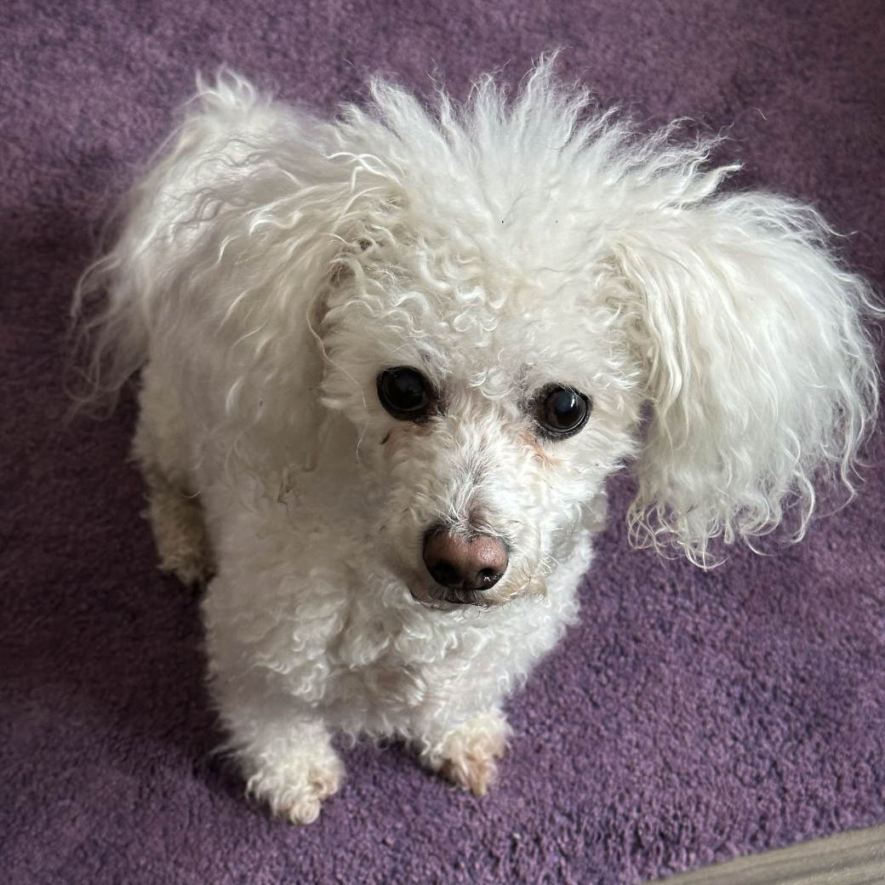

See the images Claude reads, sends and you paste, right in your terminal.

- The hair. Going in every direction, like they just rolled out of bed.
- The eyes. Big, dark and shiny: a very effective "is that food?" look.